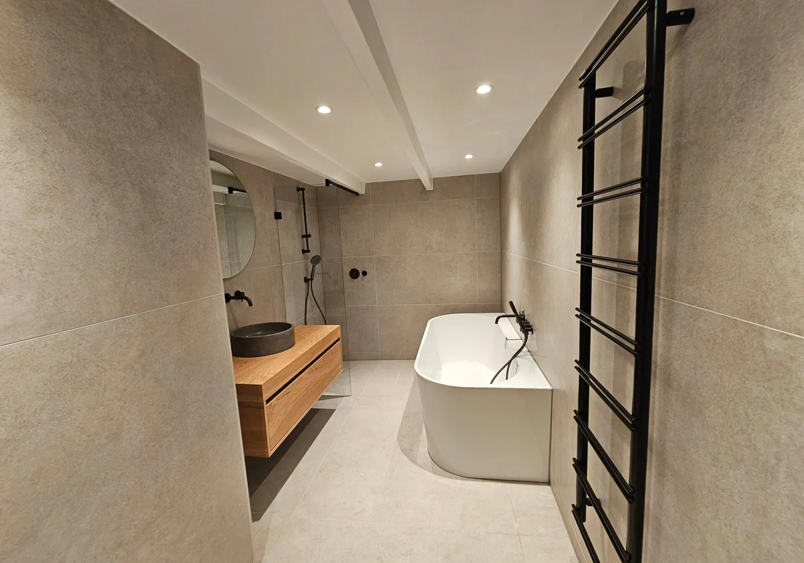

Badkamer, keuken en zolder
Badkamerverbouwingen, keukenrenovaties, zolders en dakkapellen.

Badkamers · Keukens · Zolders en dakkapellen · Renovatie
Bij Van Burik spreekt u Patrick. En Patrick staat zelf op de bouw, met zijn collega's.
Ruim negentig projectfoto's plaatste het bedrijf zelf op Google. Een paar ervan hangen hier aan de muur. Bekijk alle projecten →
Zes soorten werk, in twee groepen.
Badkamerverbouwingen, keukenrenovaties, zolders en dakkapellen.

Verbouwing en totaalrenovatie, vloeren en vloerverwarming, kozijnen en boeiboorden.
"Dikke 5 sterren voor Patrick en zijn collega's! Aanbevolen via via en daar zijn we heel blij mee. Ze hebben o. a. onze zolder geïsoleerd en de dakkapel afgetimmerd, waarbij zeer net werk geleverd is. Alles is volgens afspraak verlopen en hij was flexibel na nieuwe inzichten en het net even anders moest. Dagelijks een goede afstemming en een zeer nette afwerking. De trap werd dagelijks gestofzuigd, zodat stof en puin van de zolder niet op de verdiepingen kwam waar onze kleine meid rondliep. Ik kan Patrick en collega's 1000% aanbevelen!"
"Van sloopwerk tot eindoplevering heeft Patrick ons al het werk uit handen genomen. Altijd netjes op tijd, beschikbaar voor advies en iedere dag werd de bouwplek netjes opgeruimd achtergelaten. Binnen 2 weken hadden we een prachtige nieuwe badkamer. Heel erg blij met de samenwerking!"
Bel Patrick, of beschrijf in een paar regels wat er moet gebeuren.